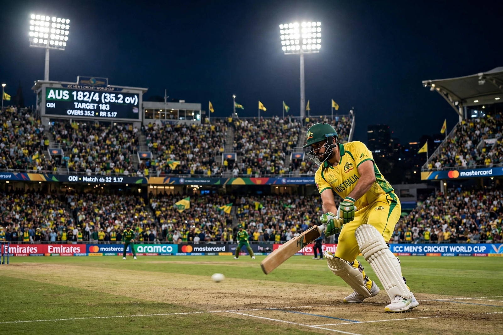

Cricket World Cup

| Sport | Cricket (One Day International) |
|---|---|
| Founded | 1975 (England) |
| Administrator | International Cricket Council (ICC) |
| Teams | 10 (2023 edition) |
| Most titles | Australia (6) |
| Current champion | Australia (2023) |
The ICC Cricket World Cup is the international championship of One Day International (ODI) cricket, contested every four years by men's national teams and organised by the International Cricket Council. It is one of the most watched sporting events in the world, with particular popularity across South Asia, Australia, England and the Caribbean.
History
The first World Cup was held in England in 1975, with matches of 60 overs per side played in white clothing with a red ball; the West Indies won the first two editions under Clive Lloyd. The tournament has since rotated among the major cricketing nations and moved to 50 overs, coloured clothing and day/night matches. Memorable finals include India's upset win over the West Indies in 1983, Pakistan's 1992 triumph under Imran Khan, India's home victory in 2011, and England's 2019 win over New Zealand at Lord's, decided on a boundary countback after a tied Super Over.
Results
Australia is the most successful team, winning the tournament six times (1987, 1999, 2003, 2007, 2015 and 2023), including a famous three-in-a-row between 1999 and 2007. India and the West Indies have won twice each; Pakistan, Sri Lanka and England once each. In the 2023 final in Ahmedabad, Australia defeated hosts India by six wickets. The next edition is scheduled for 2027 in South Africa, Zimbabwe and Namibia.